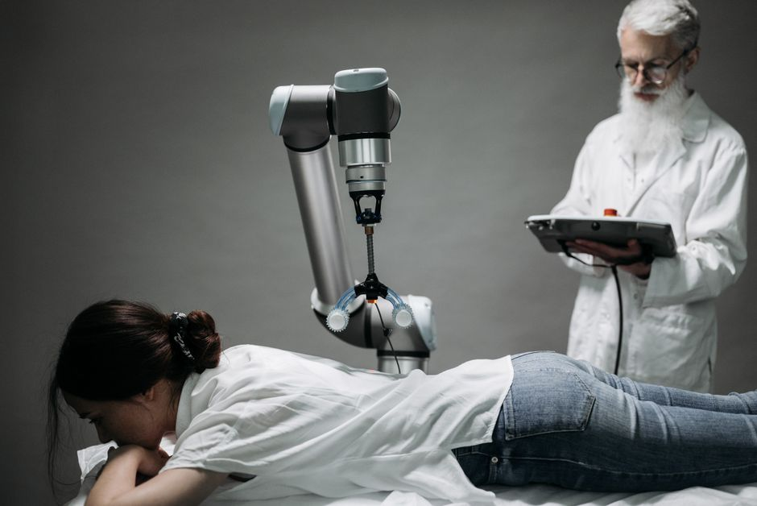

Imagine a world where complex surgeries are performed with superhuman precision, where patients recover faster, and where healthcare reaches every corner, no matter how remote. This isn't a scene from a futuristic movie; it's the rapidly evolving reality powered by surgical and medical robots! From microscopic movements in the operating theatre to helping patients regain their strength, robots are transforming healthcare in incredible ways. Here at MakerWorks, we believe understanding these innovations is key to building the future, and today, we're diving deep into the fascinating world of medical robotics, especially relevant for us here in India.
The Dawn of Robotic Surgery: Precision at Play
For centuries, surgery has relied on the skill and steady hands of human surgeons. While invaluable, human limitations like fatigue, natural tremor, and restricted access in complex areas have always been present. Enter surgical robots – sophisticated machines designed to assist surgeons, enhancing their capabilities and pushing the boundaries of what's possible in the operating room.
The Star Performer: The da Vinci Surgical System
When most people think of surgical robots, the first name that often comes to mind is the da Vinci Surgical System. It's a marvel of engineering that has revolutionized minimally invasive surgery. Instead of large incisions, da Vinci allows surgeons to operate through tiny keyhole cuts, leading to less pain, less blood loss, and faster recovery times for patients.
- How it Works: A da Vinci system typically consists of three main components:
- Surgeon Console: This is where the surgeon sits, viewing a high-definition 3D image of the surgical site. They use master controls that translate their hand, wrist, and finger movements into precise, scaled movements of the robotic instruments inside the patient.
- Patient Cart: Positioned next to the patient, this cart holds the robotic arms with specialized instruments (like scalpels, graspers, and cameras) that enter the patient's body through small incisions.
- Vision Cart: This houses the powerful processing unit that provides the 3D, high-definition images to the surgeon's console.
- Benefits: The da Vinci system offers unparalleled precision, enhanced dexterity (the robot's "wrists" can bend and rotate far beyond a human hand's capability), and superior visualization. It's used in various procedures, including prostatectomies, hysterectomies, cardiac valve repair, and even some cancer surgeries. In India, several major hospitals have adopted da Vinci systems, making advanced robotic surgery accessible to more patients.
Beyond da Vinci: A Growing Family of Surgical Assistants
While da Vinci is prominent, the field of surgical robotics is diverse. There are specialized robots for orthopaedic surgery (like knee and hip replacements), neurosurgery (assisting with delicate brain and spinal procedures), and even tiny capsule robots for diagnostic purposes. Each is designed to address specific surgical challenges with precision and efficiency, further enhancing healthcare automation.
Robots Beyond the Operating Room: Expanding Healthcare's Horizons
Medical robotics isn't confined to surgery. Robots are making significant contributions across the entire spectrum of healthcare, from patient rehabilitation to hospital logistics.
Rehabilitation Robotics: Regaining Movement and Hope
Imagine losing the ability to walk or use your arm after an injury or stroke. Rehabilitation robots are changing lives by helping patients regain lost motor functions. These robots can:
- Assistive Exoskeletons: Wearable robotic suits that help patients with spinal cord injuries or paralysis stand and walk again, providing support and guided movement.
- Therapy Devices: Robots that guide repetitive exercises for limbs, providing consistent, measurable therapy that might be difficult or tiring for human therapists to maintain over long periods. They can adapt to a patient's progress, making therapy more engaging and effective.
This area of medical robotics is particularly impactful, offering new hope and pathways to recovery for countless individuals.
Pharmacy Automation and Logistics: Efficiency in Every Dose
Hospitals are complex environments, and managing medications and supplies is a massive task. Robots are stepping in to streamline these processes:
- Automated Dispensing Systems: Robots precisely count, package, and dispense medications, reducing human error and ensuring patients receive the correct dose at the right time.
- Inventory Management: Robots can track and manage vast inventories of drugs and medical supplies, ensuring nothing runs out and reducing waste.
- Delivery Robots: Autonomous mobile robots (AMRs) navigate hospital corridors, delivering medicines, lab samples, and sterile supplies, freeing up staff to focus on direct patient care.
Telemedicine and Remote Care: Bridging Distances
In a country as vast and diverse as India, access to specialized medical care can be a challenge, especially in rural areas. Tele-presence robots are emerging as a solution. These robots allow doctors to virtually visit patients in remote locations, conduct consultations, and even monitor vital signs from hundreds of kilometers away. This expands the reach of expert medical care, making healthcare more accessible and equitable.
The Science Behind the Magic: How Do They Work?
At the heart of every medical robot lies a sophisticated blend of engineering, computer science, and artificial intelligence. Here's a glimpse into the technologies that make them tick:
- Sensors: Robots use various sensors – cameras for vision (often 3D), force sensors for delicate touch feedback (haptics), and proximity sensors to detect objects.
- Actuators: These are the "muscles" of the robot – motors, hydraulics, or pneumatics that enable precise movement of joints and instruments.
- Control Systems: Sophisticated software algorithms translate human commands (from a surgeon's console) or pre-programmed instructions into precise robotic actions, ensuring stability and accuracy.
- Artificial Intelligence (AI) & Machine Learning (ML): AI can help robots analyze medical images, assist in diagnosis, predict outcomes, and even learn from previous procedures to improve performance over time. While current surgical robots are controlled by humans, AI is increasingly used for decision support and navigation.
Here's a very simple conceptual code example illustrating a basic robotic action, similar to how a rehabilitation robot might detect a patient's limb position and apply corrective force:
# Conceptual Python-like pseudocode for a simple rehabilitation robot arm
# This is a simplified example to illustrate basic sensor-feedback control
def rehabilitation_robot_control():
target_angle = 90 # Desired elbow bend angle (e.g., for therapy)
tolerance = 5 # Acceptable deviation from target angle
while True:
current_angle = read_elbow_sensor() # Get current angle from sensor
if current_angle < (target_angle - tolerance):
move_motor_clockwise(speed=0.5) # Gently move arm towards target
print(f"Moving arm to {current_angle} degrees. Target: {target_angle}")
elif current_angle > (target_angle + tolerance):
move_motor_counter_clockwise(speed=0.5) # Gently move arm towards target
print(f"Moving arm to {current_angle} degrees. Target: {target_angle}")
else:
stop_motor() # Arm is within tolerance
print(f"Arm at target angle: {current_angle} degrees.")
# In a real scenario, it might hold position or wait for next instruction
break # For this simple example, we stop after reaching target
# Simulate a small delay for real-time operation
time.sleep(0.1)
# Assume these functions exist for reading sensors and controlling motors
def read_elbow_sensor():
# In reality, this would read from a hardware sensor
# For simulation, let's just return a changing value
import random
return random.randint(80, 100) # Simulating sensor noise around target
def move_motor_clockwise(speed):
pass # Placeholder for actual motor control command
def move_motor_counter_clockwise(speed):
pass # Placeholder for actual motor control command
def stop_motor():
pass # Placeholder for actual motor stop command
# To run this conceptual example:
# import time
# rehabilitation_robot_control()
The Impact on Indian Healthcare: A Brighter Future
The integration of medical robotics holds immense promise for India. With a large population and varying levels of healthcare access, these technologies can:
- Improve Quality of Care: Precision surgery, accurate diagnostics, and consistent rehabilitation can lead to better patient outcomes.
- Increase Access: Telemedicine robots can bring specialist care to remote villages, while automated systems can make healthcare delivery more efficient in urban centers.
- Address Shortages: Robots can augment the efforts of medical professionals, helping to manage workload and address shortages in specialized skills.
However, challenges remain, including the initial cost of equipment, the need for extensive training for medical staff, and developing robust infrastructure. But with initiatives like "Make in India" and a growing focus on STEM education, India is poised to not just adopt, but also innovate in the field of medical robotics.
"The future of medicine is not just about curing diseases, but about empowering health and well-being through intelligent technologies. Medical robots are not here to replace humans, but to augment our capabilities, making healthcare more precise, accessible, and compassionate."
Join the Robotics Revolution!
From the intricate dance of surgical instruments to the gentle guidance of a rehabilitation arm, medical robots are a testament to human ingenuity and our endless pursuit of better health. They represent a convergence of engineering, computer science, biology, and medicine, offering a vast landscape for innovation.
Are you fascinated by how robots can save lives and improve health? Do you dream of designing the next generation of medical devices? At MakerWorks, we believe that the young minds of today are the innovators of tomorrow. Explore our robotics programs, workshops, and courses to get hands-on experience with the technologies that are shaping our future. Whether you're interested in programming, electronics, or mechanical design, there's a place for you in the exciting world of robotics. Let's build a healthier future, together!